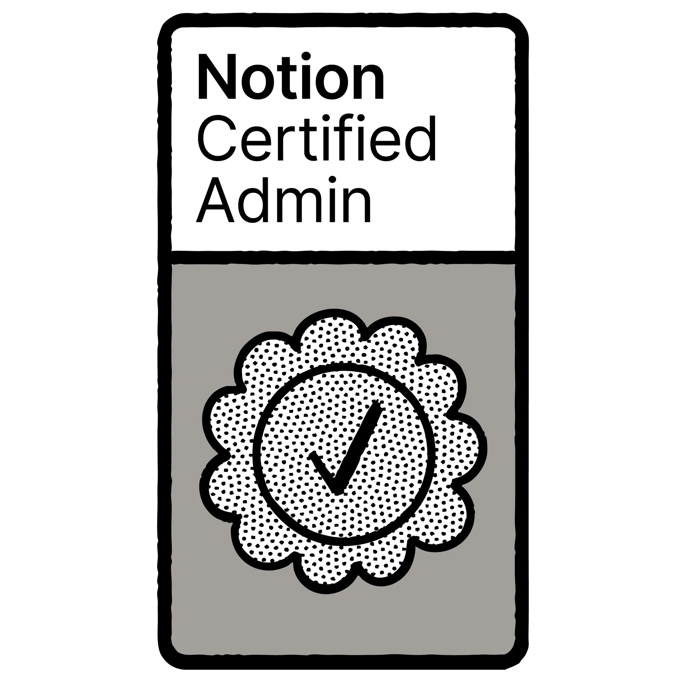
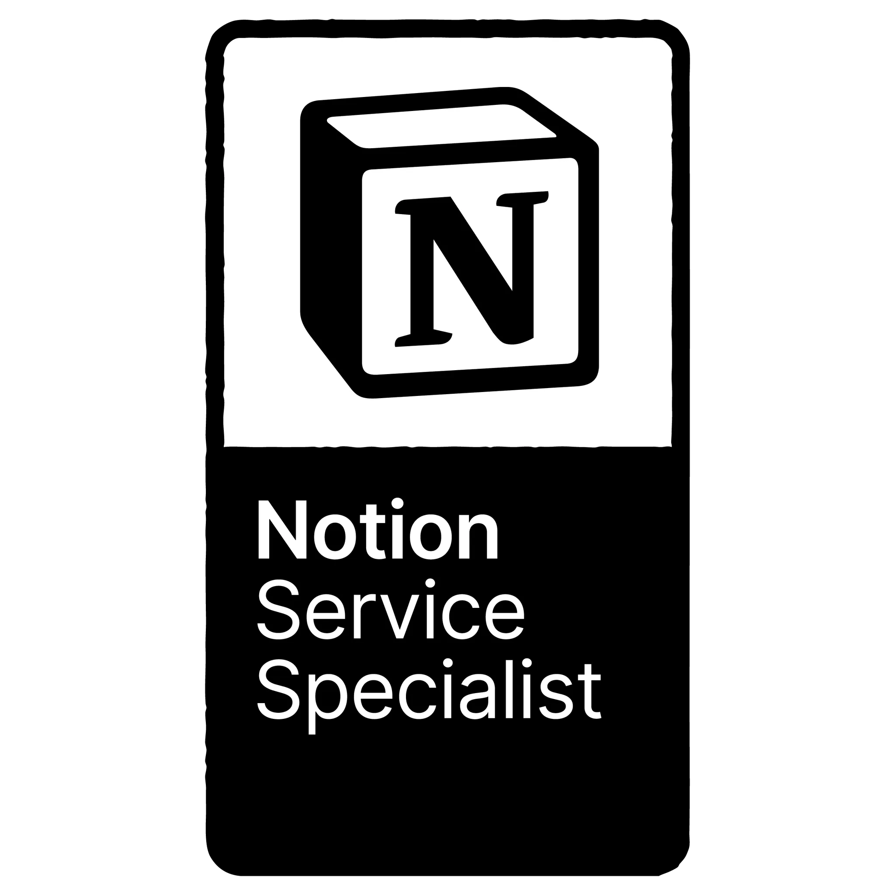
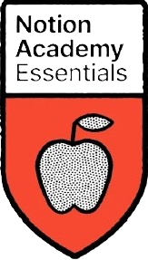
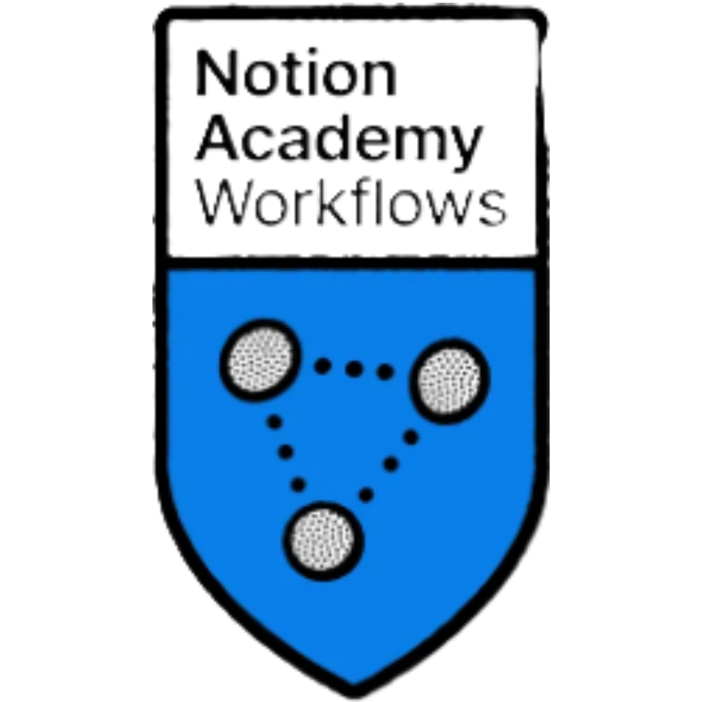
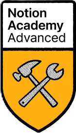
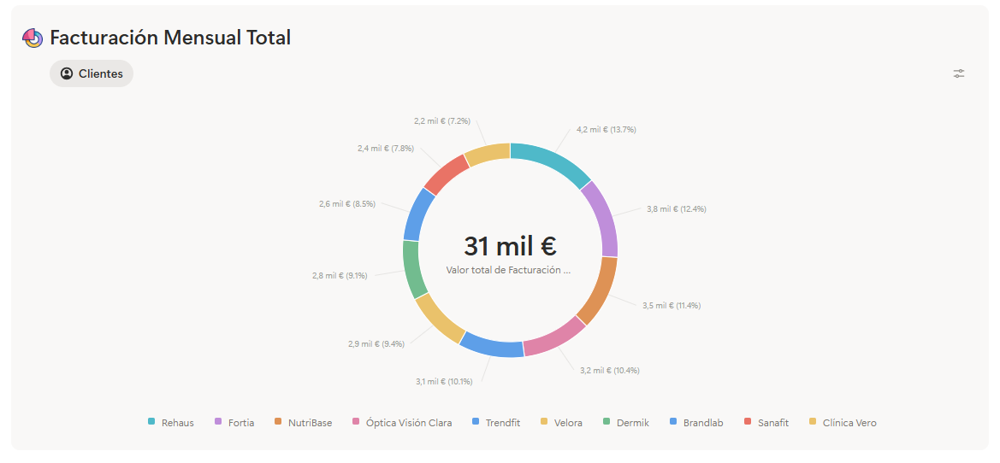
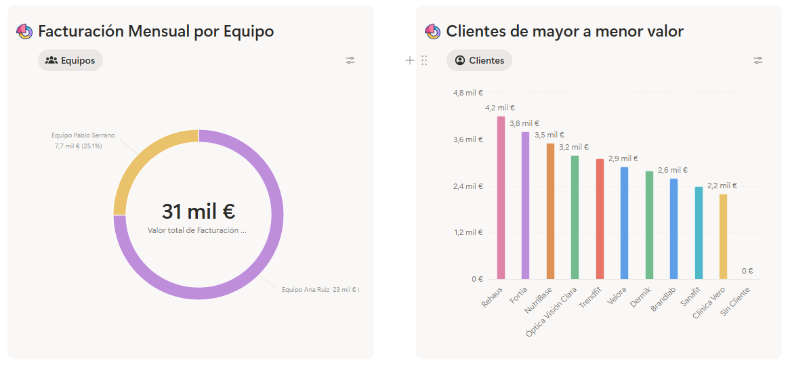
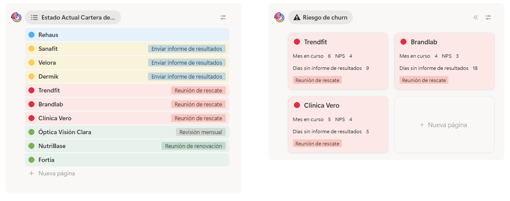

Notion + IA: que tu equipo deje de perder información, tiempo y foco.
Diseño contigo un sistema Notion con agentes IA nativos que tu equipo hace suyo. Sin Make. Sin Zapier. Sin diez herramientas que nadie abre.
Reservar 30 min sin coste →




No vendo para todo el mundo. Eso es lo que me permite hacerlo bien.
Mejor te lo digo claro antes de que reservemos una llamada: hay equipos con los que encajo y otros con los que no. Si estás en el lado izquierdo, hablemos. Si estás en el derecho, te ahorro a ti y a mí media hora.
✓Sí encajamos si…
- Eres una agencia, consultora o estudio de servicios profesionales (5–50 personas).
- Tu equipo ya usa Notion pero se ha vuelto un caos, o quieres montarlo bien desde cero.
- Quieres aprovechar la IA dentro del sistema, no encima como otra herramienta más.
- Valoras un proyecto llave en mano con formación, no un freelance que entrega y desaparece.
×No encajamos si…
- Buscas plantillas genéricas baratas para descargar y montar tú.
- Tu prioridad es automatizar con Make/Zapier/n8n y conectar 15 herramientas externas.
- Quieres alguien que diga sí a todo y no te discuta decisiones del sistema.
- No tienes a alguien del equipo dispuesto a liderar la adopción interna conmigo.
Llevo más de 5 años montando sistemas Notion que el equipo hace suyos.
Mi camino con Notion empezó en 2020, durante el confinamiento. Diseñé para el Ayuntamiento de Alicante la programación anual de más de 1.000 socios de los centros de mayores de la Concejalía de Bienestar Social, con una base de datos de +800 ejercicios detallados al milímetro — fotos, vídeos y fichas paso a paso. Ahí entendí algo simple: las herramientas no resuelven nada si el equipo no las hace suyas.
Desde entonces diseño sistemas Notion para agencias, consultoras y estudios de servicios profesionales. Certificado oficialmente por Notion con 5 acreditaciones (Certified Admin, Service Specialist, Academy Essentials/Workflows/Advanced).
Trabajo desde Alicante, en remoto, atendiendo España y LATAM con flexibilidad horaria.
Siete fases. Una conversación constante. Cero sorpresas.
No vendo software. Acompaño a tu equipo desde entender el problema real hasta usar el sistema con autonomía. Cada fase tiene un propósito, un entregable y una conversación que mantengo contigo.
Entiendo qué os duele de verdad.
Antes de tocar Notion, hablamos. Escucho al equipo, no solo al CEO. Identifico dónde se pierde la información, qué reuniones sobran y qué procesos viven en cabezas concretas.
Diseño la arquitectura antes de construir nada.
Defino cómo se organiza la información para que tu equipo la encuentre sin pensar. Trabajo con vosotros, no para vosotros: lo que se decide aquí refleja cómo trabajáis de verdad.
Aterrizo cada flujo en algo concreto.
Cojo los procesos clave y los convierto en flujos navegables: quién entra, qué hace, qué ve, qué decide. Aquí aparecen los agentes IA, no como adorno sino donde realmente quitan trabajo.
Construyo la versión mínima útil.
Monto lo acordado. Sin extras, sin "por si acaso", sin que el sistema parezca un cohete que nadie sabe pilotar. Lo importante: que esté terminado, probado y listo para el equipo.
Lo prueba el equipo en su día real.
Empieza un grupo pequeño. Observo cómo lo usan de verdad, qué fricción aparece, qué falta. Ajustamos en caliente. No es prueba de laboratorio: es uso real con clientes y proyectos reales.
El equipo lo hace suyo.
Aquí está la diferencia. Formación corta, soporte cercano, referentes internos. No "te dejo el manual y suerte". Mi objetivo es que cuando me vaya, el sistema siga vivo y creciendo.
El sistema crece con vosotros.
Cada trimestre revisamos juntos qué funciona, qué sobra, qué pedía el equipo y aún no estaba. No te dejo solo con un workspace que se va degradando: lo mantengo vivo cuando lo necesites.
Cómo una agencia de marketing descubrió que iba a perder 16.000€ al mes. En una sola pantalla.
Kova Agency — 15 personas, 10 clientes, agencia de marketing en Madrid. El problema típico: los clientes deciden irse y nadie se entera hasta que ya es tarde (al cuarto o quinto mes, cuando avisan de que no renuevan). Le diseñé un sistema en Notion que muestra en tiempo real qué cliente está en peligro, por qué, y quién tiene que actuar.
- Clínica Vero
- Brandlab
- Trendfit
- Dermik
- Velora
- Sanafit
- NutriBase
- Fortia
- Óptica Visión Clara
- Rehaus
Lo que Carlos Vidal ve cada mañana al abrir Notion.



Ve cuánto dinero puede perder este mes y qué clientes pueden crecer, sin esperar al cierre. Detecta el problema en el mes 2, no en el mes 5.
Ve sus cuentas ordenadas por semáforo (verde, amarillo, rojo). Recibe un aviso automático si una cuenta lleva más de 7 días sin informe.
Lleva sus cuentas con alertas automáticas antes de que el cliente se enfríe. Menos llamadas de status, más renovaciones.
Con un buen sistema, los agentes IA multiplican resultados. Sin sistema, multiplican el caos.
¿Tu equipo tiene este problema?Hablemos 30 minutos
Clientes y compañeros que han trabajado conmigo.
Equipos que dejaron de pelearse con sus herramientas. Testimonios reales, recogidos en LinkedIn y publicables bajo demanda.

Durante mucho tiempo trabajé así: ideas en un sitio, proyectos en otro. La sensación constante de “sé que lo tengo… pero no sé dónde”. Hasta que todo cambió. Cuando tienes muchas ideas, esto no es productividad: es tranquilidad.
Su entrega personal y carácter lo convierten en un perfil ideal para proyectos de formación empresarial e implementación de herramientas de productividad. Recomiendo su perfil sin reservas.
Cuando algo pasaba por sus manos, sabías que iba a estar bien pensado para mejorar tu día a día. Dominio muy potente de la IA y una curiosidad constante por las nuevas tecnologías.
No se limita a implementar soluciones tecnológicas: conecta la innovación con las necesidades reales de las personas y las organizaciones. Recomiendo a Sebastián sin dudarlo.
Sebas es aplicado, constante y muy orientado a la satisfacción del cliente. Notion es su pasión. Sin duda recomiendo su incorporación en cualquier lugar.
Profesional y experto en nuevas tecnologías como Notion e IA. Trato muy cordial, comunicación fluida, atención humana y rápida. Muy recomendable.
Desde el primer momento destacó por su organización y resolución de problemas. La organización que ahora puedo tener es mucho más ágil y clara.
Únete a estos equipos y compañeros.Reservar mi llamada
Lo que normalmente preguntan antes de empezar.
Sin letra pequeña. Si tu pregunta no está aquí, escíbeme directamente y respondo en menos de 24 horas.
01 ¿Cuánto tarda el proceso completo?
02 ¿Y si ya tengo Notion funcionando?
03 ¿Trabajas con Make, Zapier o n8n?
04 ¿Mi equipo necesita ser técnico?
05 ¿Y si después cambian las prioridades o algo deja de funcionar?
06 ¿Remoto o presencial?
07 ¿Cómo empezamos?
Diseño sistemas Notion que el equipo hace suyos.